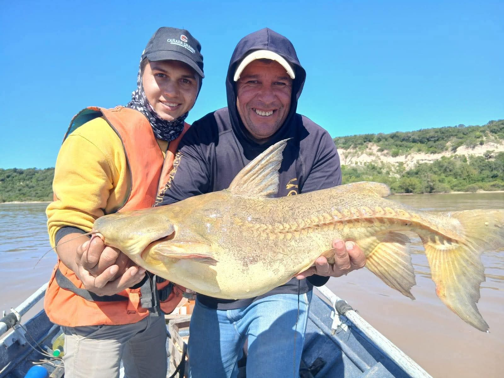

El río Paraná y la pesca
Santa Elena fue reconocida entre los aficionados por el cebadero que originaban los desaguaderos del ex frigorífico permitiendo la pesca de dorados y surubíes incluso desde la costa misma. Cerrado aquel, la zona fue prácticamente olvidada. No obstante, la práctica se ha reactivado en el último tiempo a causa del buen rinde en especies y tamaños.
La pesca deportiva es una de las actividades más importantes de la región, atrayendo turistas de todo el país durante todo el año.
El río Paraná ofrece una gran variedad de especies y paisajes únicos para disfrutar.
Especies más comunes
| Especie | Temporada | Dificultad |
|---|---|---|
| Armado | Todo el año | Baja |
| Bagre | Todo el año | Baja |
| Boga | Todo el año | Media |
| Patí | Verano | Media |
| Dorado | Todo el año | Alta |
| Surubí | Invierno | Alta |
🎣 Pesca deportiva
Actividad recreativa muy importante para el turismo local.
🚤 Excursiones
Se realizan paseos en lancha para pesca guiada en el río.
🌊 Entorno natural
El río Paraná brinda un escenario único para la actividad.